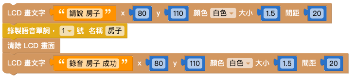
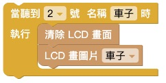
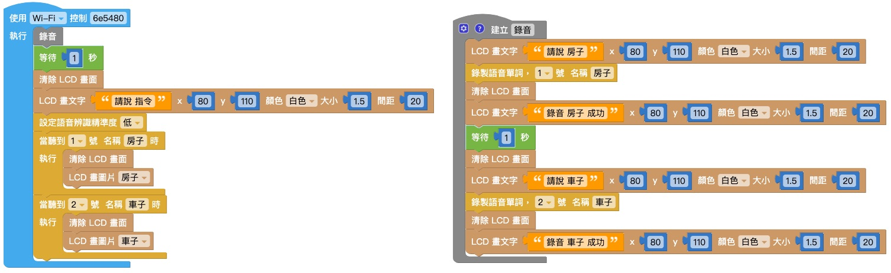

語音辨識
2022-12-02
Web:AI 能夠將收錄到的聲音轉換成訊號，經過處理後儲存成聲音模型，當偵測到聲音時，會開始和開發板儲存的聲音模型比對音色、頻率，進而得到辨識結果。
錄製語音
「錄製語音」積木能夠透過開發板上的麥克風接收聲音訊號，並將訊號轉換成聲音模型儲存，開發板中最多可以同時儲存 10 個模型並做辨識。
- 錄音的時間約 1.5 秒
- 錄製完的聲音模型會一直存放在開發板中，除非經過韌體更新或是錄製相同編號模型覆蓋。

使用「錄製語音」積木建立聲音模型並不會覆蓋 教學範例卡：語音互動 中的聲音模型，可以放心使用！
歡迎參考：教學範例卡使用教學: 語音互動。
語音辨識
當開發板的麥克風偵測到聲音時，如果符合聲音模型，就會自動執行「語音辨識」積木中的內容。

「語音辨識」積木的號碼和名稱會和「錄製語音」積木互相對應。

語音辨識門檻
因為每個人的音色、頻率都不同，所以針對不同應用需要調整辨識門檻才能達到合適的效果。
而「語音辨識門檻」是語音辨識的精準度，門檻越高代表聲音越像才會辨識成功。
「語音辨識門檻」積木需要放在「語音辨識」積木之前！

範例：聲控圖案
錄音
結合「畫文字」積木和「錄製語音」積木，錄音時顯示「請說 XX」；錄音完成時顯示「錄音 XX 完成」。

做出另一組相同的積木，如下圖：

將 1. 和 2. 的兩組積木組合，並用「等待」積木和「清除 LCD 畫面積木」隔開，再放入「函式」積木中，將函式命名為「錄音」。

將函式「錄音」放入「開發板」積木中，在下方再放入其它積木，如下圖即完成錄音程式。

辨識
首先放入「語音辨識門檻」積木，可以根據辨識的狀況改變門檻高低。
使用「語音辨識」積木，當聽到錄製的單詞時，會做出後續的程式。

複製 2. 的積木，並做出另一組積木。

將積木組合，按下執行即可開始語音辨識。
